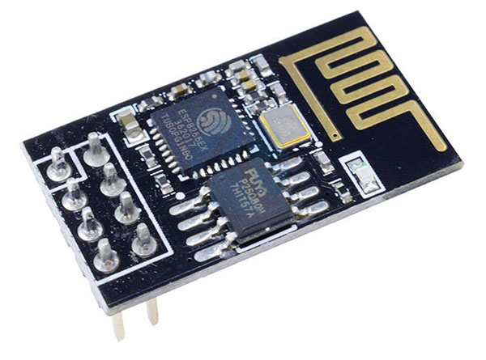
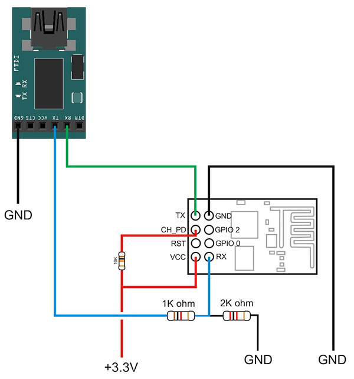

基于ESP8266芯片开发，模组集成了透传功能，支持串口AT指令集


ESP-01S模块产品描述： 无线标准：802.11b / g / n 频率范围：2.4GHz-2.5GHz（2400M-2483.5M） 数据接口：UART / HSPI / I2C / I2S / Ir远程控制/ GPIO / PWM 工作电压：3.0-3.6V（我们推荐3.3V） 工作电流：平均80mA 工作温度：-40〜125℃ 无线网络模式：station / softAP / SoftAP + station 安全模式：WPA / WPA2 加密类型：WEP / TKIP / AES 网络协议：IPV4，TCP / UDP / HTTP / FTP
常见问题： Q: ESP-01和ESP-01S的区别 A: ESP-01S的就是比ESP-01的多了两颗小料增加了天线的强度，其他的是一样的，可以完全代替ESP-01的 Q: ESP-01的传输距离 A: 40米左右，这个是参考距离，实际要看您的使用环境
©2021– by Joe